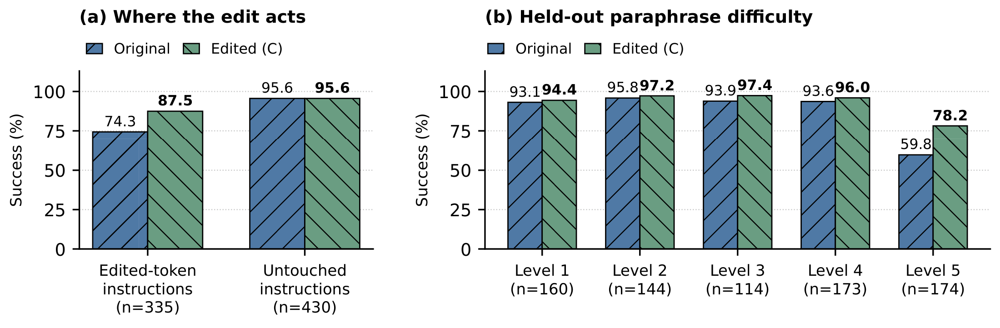
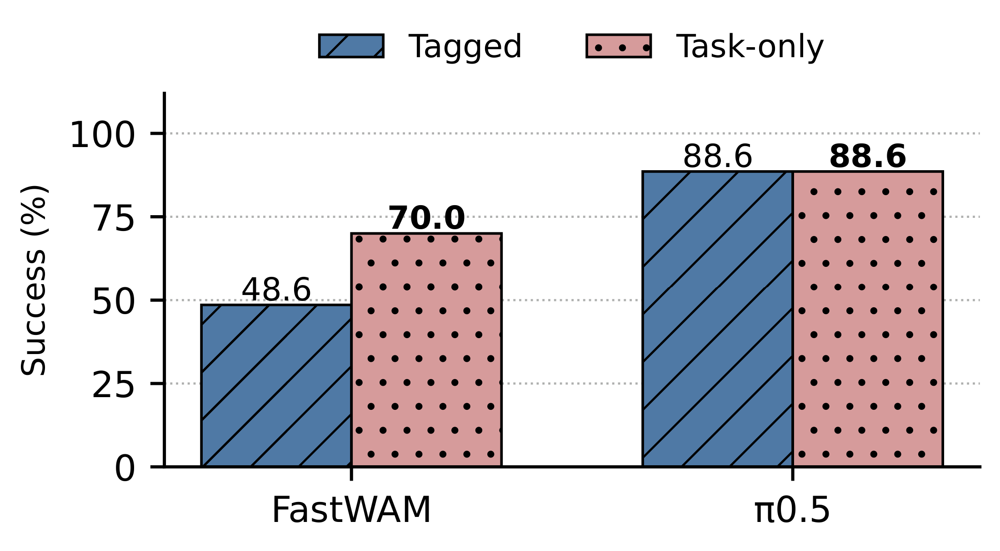

只改65行词嵌入，GPT-6 Astra修复了一类机器人“换种说法就失败”的问题。
先看它做错了什么
任务是打开炉灶。研究者给机器人的指令是“activate the cooking appliances heat source”，也就是启动烹饪设备的热源。原始策略却去拿盘子，执行300步后仍未完成任务。
换成修改后的权重，同一个场景、同一条指令、同一个随机种子，机器人在第78步完成了任务。整个编辑过程没有使用梯度更新，也没有新增机器人示范数据，而是让Astra检查预训练策略的权重，结合有限次数的仿真反馈构造修改。
修改前
超时 · 300 步
修改后
成功 · 第 78 步
同一条指令、同一个场景、随机种子 7、初始状态 0。修改前在第 300 步超时，修改后在第 78 步成功。这是一例选出的留出修复；完整统计也包括没有改善和发生退化的回合。视频来自真实仿真记录。
这来自斯坦福大学研究者Jusheng Zhang等人的新研究《Can LLMs Debug Robots by Editing Their Weights?》。在效果最好的实验中，335条含被改词元的留出指令，成功率从74.3%提高到87.5%；另外430个回合的成败结果逐一不变。这里的“零变化”指每个回合的成功或失败结果。
论文、实际评测过的权重修改、代码和全部16次实验记录已经公开。下面按研究团队的实验过程展开。
从MIT改Qwen，到让LLM调试机器人
MIT此前的Weight-Space Programming研究提出：把一个训练好的神经网络交给通用LLM，让它检查权重、解释行为，并直接构造参数修改。在Qwen实验中，Astra通过局部权重修改缓解了反复推理的问题，让模型更容易完成原本就可能解出的题目。[2]
我们想进一步检验这条路线能否用于大型预训练机器人策略。机器人必须持续观察场景、生成动作，再根据执行后的新画面继续行动。一份修改最终有没有用，要看整个操作任务能不能完成。
我们首先使用OpenPI发布的π₀.₅ LIBERO检查点，在LIBERO任务和LIBERO-Plus的指令改写中寻找失败。[1][5][6] 模型已经接受过预训练和微调，具备一批操作能力。一部分失败发生在任务目标没有改变、描述方式却变化的时候：模型会转去执行场景中的另一项操作。
这给了我们一个具体的调试目标：能否让语言更可靠地调用策略已有的动作？
一次早期涨分，还算不上修复
我们为Astra准备了一个持续保留状态的CPU Python工作区，让它检查张量、写入替换值，再通过独立的前向工具观察仿真结果、动作或内部信号。每次语言编辑有50次计入预算的工具请求，一次请求可以包含多个回合或输入。最终留出测试的结果不会反馈给Astra。
在一次编辑过程中，原始模型先在80条较难的目标任务改写上成功49次。Astra围绕词汇表达提出修改，早期候选在这组诊断样本上做到了69/80。这个分数看起来不错，换一批样本后，问题却暴露出来：有8次失败被修复，也有6次原本成功的回合退化。
Astra随后调整有歧义的词汇映射，形成一份涉及65行词嵌入的候选，并冻结修改，再用预留练习样本验证。对运行错误做同种子重试并去重后，460个样本的成功数从412增至429。最终，Astra保留了这份修改。
这段过程里，选哪些词元、向哪些目标向量移动、每行改多少，都是Astra在会话中提出并检查的。不同练习批次的分数不能连成一条训练曲线；完整765条留出指令上的结果，要在候选确定后单独计算。
回放 Astra 的一次修复
下面保留了这次语言修复的原始任务、实际修改代码、实验笔记和全部 50 次工具请求。可以拖动时间轴、点击节点逐次查看，也可以切换到一次最终撤回的失败恢复搜索。这里回放的是已有记录，不会启动新的机器人推理。
给 Astra 的材料π₀.₅ · 36.2 亿参数 · Python · 50 次请求
回放按归档顺序展示，不启动新推理。每次实验用了 50 次计入预算的请求，一次可包含多个回合或输入；未计费的拒绝请求仍保留在原始日志中。不同练习批次的样本不同，分数不能连成训练曲线。
65行，改在了模型的语言入口
模型收到一条指令后，会先把文本拆成词元，再从嵌入表中为每个词元取出一行向量。后续网络处理的是这些数值表征。
Astra的修改集中在这张表上。它把部分词元的向量移向模型更熟悉的任务锚点，例如cooker→stove、basin→bowl、fermented→wine。有些行直接采用目标向量，有些保留一部分原向量；含义有歧义时，也可以参考多个目标向量的均值。
首页炉灶指令中的cooking就是一个具体例子：对应词元的嵌入被混合为25%的原向量与75%的stove向量。送进模型的文字仍然是cooking，进入后续网络的数值表征变了，动作则继续由原策略计算。这一行属于整份65行修改，它的单独作用没有另做评估。
65行共改变132,768个参数值，占导出检查点的0.00367%。这里的“行”是嵌入表的行数。提交的语言修复只改变这些嵌入值，输入指令和其余模型参数保持原样。完整的词元ID、目标行和混合比例也随代码公开。
这与ROME、MEMIT、MEND等模型编辑研究属于相关问题。[8][9][10] 我们在这里检验的是通用LLM能否借助权重检查和仿真反馈构造有效修改，没有与这些编辑算法做直接比较。
再看几例：指令里的哪些词读到了修改？
可以先点选下面的录像，也可以从输入框的建议中选一条测试指令。高亮标出模型实际读取、且被 Astra 修改过的词元（token）；词元由模型的 SentencePiece 分词器决定，并不一定等于一个完整英文单词。这里展示的是已完成实验的记录，不会现场启动新的机器人推理。
修改前
超时 · 300 步
修改后
成功 · 第 78 步
LIBERO-Goal，第 1421 个变体；随机种子 7，初始状态 0。这是一组修复成功的案例，完整统计结果见后文。
修改前
超时 · 300 步
修改后
成功 · 第 90 步
LIBERO-Goal，第 1198 个变体；随机种子 7，初始状态 0。这是一组修复成功的案例，完整统计结果见后文。
修改前
超时 · 300 步
修改后
成功 · 第 85 步
LIBERO，变体 1174；随机种子 7，初始状态 0。
修改前
超时 · 220 步
修改后
成功 · 第 138 步
LIBERO，变体 1148；随机种子 7，初始状态 0。
换765条留出指令，修改还能起作用吗？
为了检查修复是否只对少数练习样本有效，我们从同一个原始检查点分别开始三次编辑，彼此不继承笔记和修改，再把三个候选放到同一组765条留出改写指令上评估。这些指令单独留到最后测试，测试结果不向编辑器反馈。
| 编辑实验 | 修改行数 | 原始成功率 | 修改后成功率 |
|---|---|---|---|
| A | 18 | 86.3% | 89.4% |
| B | 20 | 86.3% | 88.0% |
| C | 65 | 86.3% | 92.0% |
三次独立的是编辑过程，测试使用相同的765条指令和随机种子7；每个候选均与原始策略配对比较。三项主要检验经Holm多重比较校正后仍显著。
效果最好的C，将成功数从660提高到704：48次原本失败的回合成功了，同时有4次原本成功的回合失败，净增加44次成功。整体提升为5.8个百分点，精确配对检验p=1.31×10⁻¹⁰。
我们还按指令是否读到被修改的词元，把结果分开看。含被改词元的335条指令，成功数从249增至293，对应74.3%→87.5%。剩下430个回合，成败结果逐一不变。

这种局部性可以从查表过程解释：如果一条指令完全没有读取被修改的行，它得到的文本向量就相同。固定相机观察和采样噪声，其余未改动的网络会得到相同的计算输入。含被改词元的其他新语境仍可能受到影响，需要另行测试。
只是换一组同义词，就能做到吗？
一个自然的问题是：收益究竟来自Astra找到了有意义的修改方向，还是任何小扰动都可能让模型变好？我们对相同的65个源行做了两种对照。
第一种沿随机方向移动，距离与原修改匹配；第二种沿用Astra找到的词汇对应关系，把源嵌入完整替换为目标嵌入，也保留多目标均值的设置。第二种比较的是嵌入完整替换，不是改写输入字符串。
| 方法 | 成功率 | 修复 / 退化 |
|---|---|---|
| 原始策略 | 86.3% | — |
| 随机方向，匹配移动距离 | 85.2% | 7 / 15 |
| 按Astra的对应关系完整替换 | 90.5% | 43 / 11 |
| Astra编辑C | 92.0% | 48 / 4 |
同一组765个回合。完整替换的2次、随机对照的3次运行错误在表中按失败计，论文也报告排除无效配对后的分析。
这次随机方向对照没有带来提升。完整替换已经解释了相当一部分收益：找到哪些词元该改、应该移向哪里，本身就很关键。Astra编辑C的点估计更高、退化更少，但与完整替换在763个有效配对上的直接比较p=0.0614，尚未达到0.05的显著性标准。
因此，现有结果支持LLM能够发现并构造有效的词汇修复；部分混合是否显著优于完整替换，还没有得到确认。我们也没有据此宣称它优于独立编制的人工词表、提示词改写或微调方法。
有些故障，Astra没有修好
公开的16次机器人实验，还包括相机视角、背景、语言扰动、指令后缀，以及LIBERO-RECOVER的失败恢复和LIBERO-PRO的鲁棒性搜索。[11][12] 按论文的最终决定统计，三次语言修复全部保留且有显著留出收益；其余13次搜索中有12次放弃候选，唯一计为保留的后缀跟进也没有显著留出收益，p=0.542。
失败恢复实验尤其直观。一份修改让机器人空抓后更经常重新张开夹爪，但一组练习评测中，真正完成任务的次数反而从213/352降到208/352。某个内部信号按预期改变，整个任务仍可能没有改善。
我们保留了这些搜索的完整记录。12/13反映的是这组运行中的选择，距离证明LLM能普遍识别“哪些故障可修”还有差距。历史运行中还出现过收尾代码未执行、撤回候选留在磁盘的情况；框架bug已修复，归档文件与最终决定在材料中分别说明。
一串无关数字，也能改变机器人表现
在FastWAM实验中，我们还发现一个与评测设置有关的现象：往指令末尾加上“view 0 0 100 2 354 initstate 0”一类元数据，策略表现会明显变化。[14]
相同的210个配对回合，FastWAM使用纯任务指令时成功率为70.0%，加后缀后降到48.6%。作为对照，被测π₀.₅的总体成功率两次均为88.6%，其中有9次改善、9次退化。

这个现象尚未变成稳定的权重修复。首轮FastWAM归档候选伴随撤回要求，后续实验也没有确认显著收益。比较只涉及两个已发布检查点；DreamZero、E0.5等WAM研究提供了更广的背景，但不在本次后缀测试范围内。[15][16]
它给评测留下了一个具体问题：报告机器人成功率时，送进模型的到底是一条怎样的指令？
第一版已公开，真机验证还在进行
论文标题问的是：LLM能靠修改权重调试机器人吗？这组实验给出的回答是，对一类词汇理解失败，少量直接权重修改已经能带来可核查的改善。我们把它理解为对语言调用已有行为的修复；语言到动作的完整因果通路尚未逐层定位。
验证范围也需要说清楚：主留出测试使用同一随机种子；早期200条留出子集未检出显著提升，随后是在既有完整留出划分上评测同一候选。补充的多种子检查来自练习集，收益不均匀。所有已公开实验均来自仿真，尚未验证真机迁移或新运动技能的获得。
当前开源的是第一版（v1），第二版研究和真机实验正在进行。基座已经经过预训练和微调，编辑也使用仿真反馈。GitHub提供了实际评测过的65行稀疏修改及应用脚本、运行框架、全部16次会话和逐回合证据，读者可以沿着记录检查一份修复究竟怎样形成、又在哪些地方失效。
论文、代码、权重与完整记录
论文与代码已经公开。以下入口指向正式发布的材料，完整复现说明见 GitHub。
参考文献选读
- π₀.₅: a Vision-Language-Action Model with Open-World Generalization
- Sparks of Weight-Space Programming: LLMs can natively read and write neural network weights
- π₀: A Vision-Language-Action Flow Model for General Robot Control
- OpenVLA: An Open-Source Vision-Language-Action Model
- LIBERO: Benchmarking Knowledge Transfer for Lifelong Robot Learning
- LIBERO-Plus: In-depth Robustness Analysis of Vision-Language-Action Models
- Stable Language Guidance for Vision–Language–Action Models
- Locating and Editing Factual Associations in GPT
- Mass-Editing Memory in a Transformer
- Fast Model Editing at Scale
- LIBERO-RECOVER: Beyond Task Success Towards Failure Recovery in Robotic Manipulation Models
- LIBERO-PRO: Towards Robust and Fair Evaluation of Vision-Language-Action Models Beyond Memorization
- LoRA: Low-Rank Adaptation of Large Language Models
- Fast-WAM: Do World Action Models Need Test-time Future Imagination?
- World Action Models are Zero-shot Policies
- E0.5: From Reconstructive to Future-Predictive 3D Foundations for Robotic World-Action Modeling